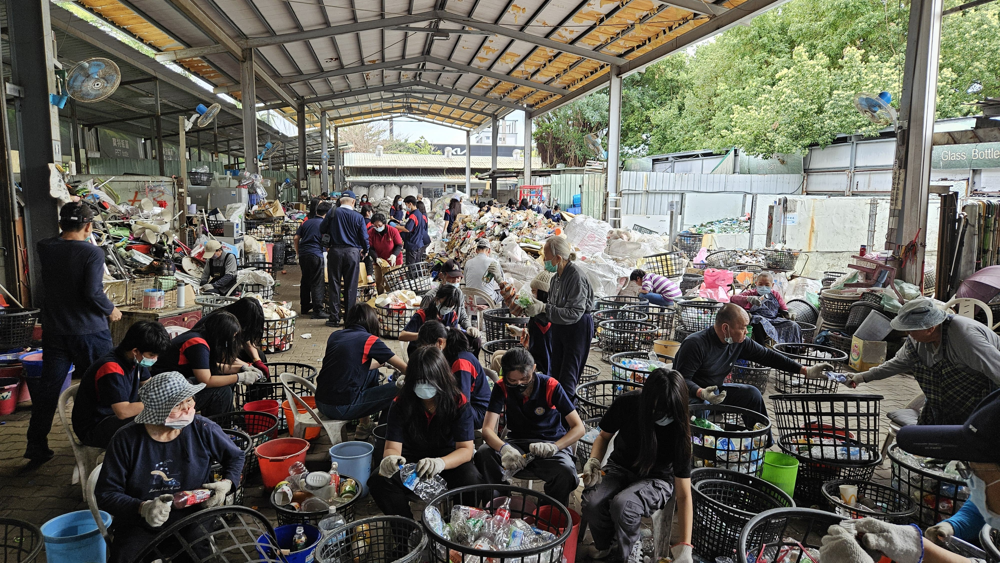

Community Service
On the first day of my visit to Taiwan i got the chance to visi the Holy Family Catholic church in Taipei. One of the many uniqe traits of this church is the modern architectural design and the arrangement of chairs inside the church. When we first entered the building, i noticed that the seat arrangement of this church was in a shape of a cross, the seating arrangement was not the only thing that caught my eye but the overall design of this curch was very simple and modern. Knowing that this church was built in 1953, the modern design of this church was something that i did not expect. The many differences of the Holy Family Church and my church which is, Santo Laurensius is the architecture design of the church. Santo Laurensius focuses more on a old style architecture and the designs are more intricate and detailed. Compared to the Holy Family Catholic church, which focuses more on a modern and simple design.
I did this communit service activity to help many elderly people or known as "volunteers" to help assort different types of trash, ranging from plastic, paper and much more. Throughout this CS activity, i was able to arrange and sort different types of trash properly and carefully, indorder for the recycling process to be easier and less complicated.
